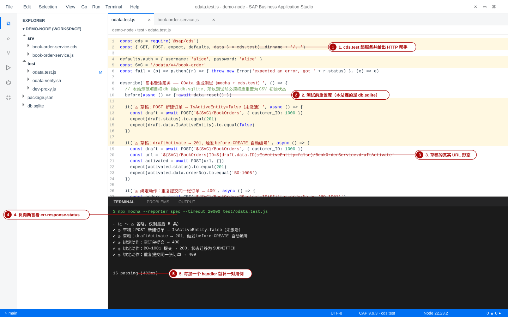
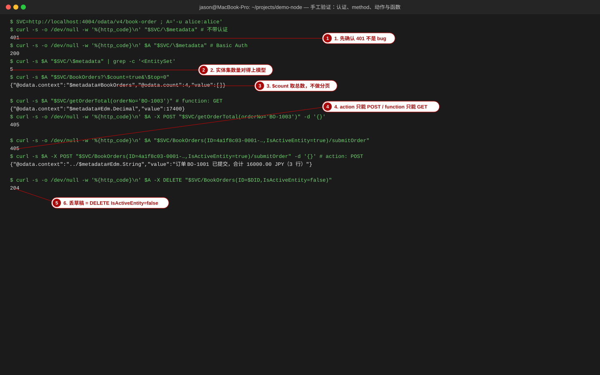
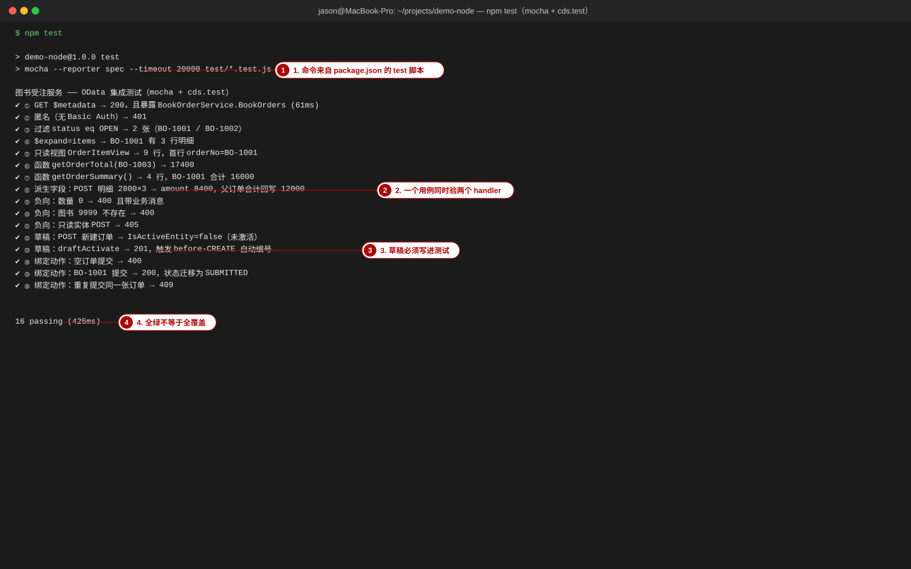
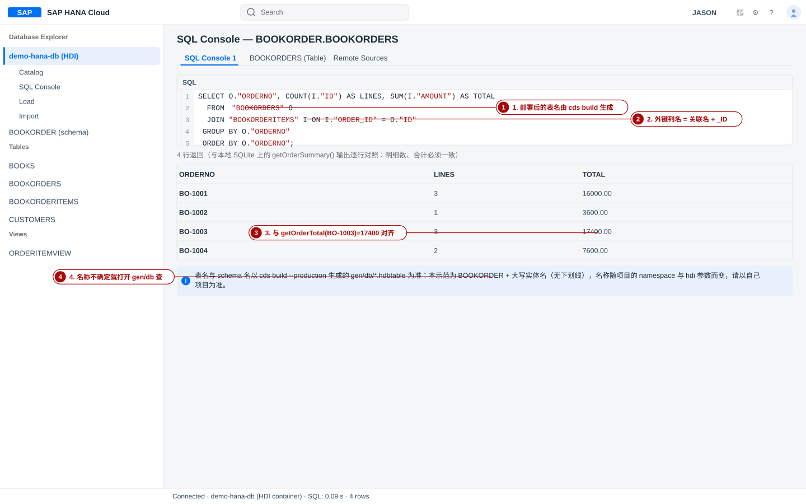

测试体系：从一条 curl 到 CI
覆盖对象：cds compile（模型检查）· mocha + cds.test（本站实测 16 passing）· test/odata-verify.sh（26 条 OData 断言，PASS 26 / FAIL 0）· curl / Postman 手工验证 · 测试数据与幂等性 · GitHub Actions。每个手顺都给可复核的期望输出，命令与结果都来自本站示范项目 project-code/demo-node 的本地实测。
- 用三条命令（
cds compile/mocha/bash test/odata-verify.sh）覆盖 CAP 服务的三层测试，并说清每层的定位与代价； - 写出
cds.test风格的用例，包含正向（$expand、函数、派生金额、汇总回写）与负向（400 / 401 / 405 / 409）断言； - 解释为什么你的测试第二次跑就失败，并用
data.reset()/npm run deploy/ 独立 sqlite 文件解决； - 把测试接进 GitHub Actions，并说清为什么
cds watch不属于 CI； - 用一份 DoD 清单判定「这个服务可以交付了吗」。
本页输出的实测环境：Node 22.23.2、@sap/cds 9.9.3、@sap/cds-dk 9.9.6、mocha 10 / chai 5、数据库 db.sqlite（SQLite）。原始记录：work/evidence/04_odata.txt（验收脚本）、13_mocha.txt / 13b_npm_test_pass.txt（mocha）、17_methods.txt（方法/认证探测）。本站示范项目在交付时并未内置 test/odata.test.js，第 2 层里的 mocha 用例是实测过程中临时加入后运行的（页面里给出全文，可自行复现）；第 3 层的 test/odata-verify.sh 是项目自带的。GitHub Actions 的 yaml 是示例，未在真实 CI 上执行（已标注）。
0. 本页地图与测试金字塔
CAP 项目的测试有一个很现实的约束：越靠近模型，跑得越快、成本越低；越靠近 UI，越慢越脆。所以本站示范项目按下面的金字塔组织，你也应该按这个顺序投入时间。
| 层 | 工具 | 本站实测命令 | 真实结果 | 能抓到的 bug |
|---|---|---|---|---|
| 0 | cds compile | npx cds compile srv/book-order-service.cds --to edmx | 无 [ERROR]，5 个 EntitySet + 2 个 FunctionImport | 语法、关联、主键、重定向歧义 |
| 1 | mocha + cds.test | npm test | 16 passing (425ms) | handler 逻辑、状态码、字段名、draft 流程 |
| 2 | bash + curl | bash test/odata-verify.sh | PASS 26 / FAIL 0 | 端到端行为、认证、真实部署形态 |
| 3 | （本节不展开） | — | — | 列宽、按钮、草稿消息条等 UI 细节 |
bashcd project-code/demo-node node -v # 期望 v22.x（本站 v22.23.2） npx cds --version | head -3 # 期望 @sap/cds 9.9.3 / @sap/cds-dk 9.9.6 npm run deploy # 把库重置成 CSV 初始状态（第 2、3 层都要靠它保证幂等）

1. 第 0 层：模型与语法检查
这一层的价值在于把「模型错误」和「代码错误」分开：模型编译不过时，别急着看 handler。CAP 的编译器会在 cds compile、cds watch 启动、cds deploy 三个时机读模型，模型报错会同时出现在三处。
1-1 手顺：两条编译命令当冒烟测试
- 动作：编译成 SQL（检查表/列/类型）与 EDMX（检查服务暴露面）。
bash
npx cds compile db/schema.cds srv/book-order-service.cds --to sql > /tmp/model.sql npx cds compile srv/book-order-service.cds --to edmx > /tmp/model.edmx grep -c '^CREATE TABLE' /tmp/model.sql # 期望：4（Books/Customers/BookOrders/BookOrderItems） grep -c '<EntitySet Name' /tmp/model.edmx # 期望：5（含视图 OrderItemView） - 验证（真实输出）：本站结果 —— 4 张表、5 个实体集、2 个 FunctionImport、1 个绑定 Action：
text
$ npx cds compile db/schema.cds srv/book-order-service.cds --to sql CREATE TABLE sap_training_bookorder_Books ( ID INTEGER NOT NULL, title NVARCHAR(120) NOT NULL, price DECIMAL(9, 2) NOT NULL, PRIMARY KEY(ID) ); … $ npx cds compile srv/book-order-service.cds --to edmx | sed -n '26,44p' <EntitySet Name="Books" EntityType="BookOrderService.Books"/> <EntitySet Name="BookOrders" EntityType="BookOrderService.BookOrders"> <EntitySet Name="OrderItemView" EntityType="BookOrderService.OrderItemView"/> <FunctionImport Name="getOrderTotal" Function="BookOrderService.getOrderTotal"/> <Action Name="submitOrder" IsBound="true"> - 动作（可选但推荐）：把「有没有 ERROR」也断言掉，这一条能进 CI（否则编译报错但退出码仍是 0，详见 §9-③）。
bash
out="$(npx cds compile srv/book-order-service.cds --to edmx 2>&1)" if grep -q '\[ERROR\]' <<< "$out"; then echo "MODEL ERROR"; echo "$out" | grep '\[ERROR\]'; exit 1; fi echo "model ok"; grep -c '<EntitySet Name' <<< "$out"
[ERROR]，且实体集数量=5、表数量=4 与你对模型的预期一致。改动 db/schema.cds 后第一步永远先跑这个。cds compile 会打印 [ERROR]；而 cds-serve / cds watch 会直接拒绝启动并以 ERR_CDS_COMPILATIO
退出，消息精确到 文件:行:列。本站实测见过一次（注解文件里一个 : 写错）：
textCompilationError: CDS compilation failed (@sap/cds-compiler v6.9.5) app/book-orders/annotations.cds:64:23-24: Error: Mismatched ‘:’, expecting ‘,’, ‘.’, ‘)’, ‘#’ code: 'ERR_CDS_COMPILATION_FAILURE'
含义：看到服务起不来、端口没人监听时，第一步永远是看启动输出里的模型报错，而不是去查 handler。
2. 第 1 层：mocha + cds.test
cds.test 是 CAP 官方的测试入口：它为你的项目启动一个真实服务（随机端口、自动加载模型、mock 认证），并给出一组 HTTP 帮手函数（GET / POST / PATCH / DELETE）、expect 断言库、defaults 默认请求参数，以及 data.reset() 重置数据库。它测的是 HTTP 层：请求经过鉴权、协议适配、你的 handler、真实数据库 —— 与手工 curl 是同一条路径，只是被脚本化了。
@sap/cds 9 的 cds.test 内部依赖 @cap-js/cds-test，不装它会直接报模块缺失。而 @cap-js/cds-test@1.0.2 的 peer 依赖要求 chai@^6，示范项目里是 chai@^5 → npm i 会因 ERESOLVE 失败。两条路：把 chai 升到 ^6，或先 npm i -D @cap-js/cds-test --legacy-peer-deps（本站实测用后者跑通，`--no-save --package-lock=false` 以免动到项目文件）。
- 第 1 层：测试代码与业务代码同仓，能直接断言返回值、能 mock、能在用例里造数据；每个用例独立小步，失败时能精确指出哪个 handler 坏了。代价：需要装包、需要写代码、服务于「Node 侧的实现细节」。
- 第 2 层：一个 bash 脚本从外部打 HTTP，与服务实现完全解耦。好处：任何语言/任何运行时（Node 或 Java）都能跑、可直接对着已部署环境跑、学员复制即可用。代价：断言粒度粗、造数据啰嗦、失败时只能靠日志定位。
- 务实做法：两层都留。日常开发跑第 1 层（快、细），交付/部署后跑第 2 层（真、稳）。本站示范项目两者都有。
2-1 手顺：把 test/odata.test.js 跑起来
- 动作：装测试依赖（见上）。这一步在 CI 里也必须做。
bash
npm i -D @cap-js/cds-test --legacy-peer-deps # 或把 chai 升到 ^6：npm i -D chai@^6 - 动作：写下测试文件（本站实测用的全文，逐字可复用）。注意三点：
cds.test(__dirname + '/..')指向项目根、defaults.auth提供 Basic Auth、负向用例用.catch(e => e)收错误再断言err.response.status。jsconst cds = require('@sap/cds') const { GET, POST, expect, defaults, data } = cds.test(__dirname + '/..') defaults.auth = { username: 'alice', password: 'alice' } const SVC = '/odata/v4/book-order' const fail = (p) => p.then((r) => { throw new Error('expected an error, got ' + r.status) }, (e) => e) describe('图书受注服务 —— OData 集成测试（mocha + cds.test）', () => { // 本站示范项目把 db 指向 db.sqlite，所以测试前必须把库重置为 CSV 初始状态 before(async () => { await data.reset() }) it('① GET $metadata → 200，且暴露 BookOrderService.BookOrders', async () => { const res = await GET(`${SVC}/$metadata`) expect(res.status).to.equal(200) expect(res.data).to.contain('BookOrderService.BookOrders') }) it('② 匿名（无 Basic Auth）→ 401', async () => { const err = await fail(GET(`${SVC}/BookOrders`, { auth: false })) expect(err.response.status).to.equal(401) }) it('③ 过滤 status eq OPEN → 2 张（BO-1001 / BO-1002）', async () => { const res = await GET(`${SVC}/BookOrders?$filter=status eq 'OPEN'&$select=orderNo&$orderby=orderNo`) expect(res.data.value.map((r) => r.orderNo)).to.deep.equal(['BO-1001', 'BO-1002']) }) it('④ $expand=items → BO-1001 有 3 行明细', async () => { const res = await GET(`${SVC}/BookOrders?$filter=orderNo eq 'BO-1001'&$expand=items`) expect(res.data.value[0].items.length).to.equal(3) }) it('⑧ 派生字段：POST 明细 2800×3 → amount 8400，父订单合计回写 12000', async () => { const orders = await GET(`${SVC}/BookOrders?$select=ID&$filter=orderNo eq 'BO-1002'`) const orderID = orders.data.value[0].ID const created = await POST(`${SVC}/BookOrderItems`, { order_ID: orderID, book_ID: 1003, quantity: 3 }) expect(created.status).to.equal(201) expect(created.data.amount).to.equal(8400) const after = await GET(`${SVC}/BookOrders(ID=${orderID},IsActiveEntity=true)?$select=totalAmount`) expect(after.data.totalAmount).to.equal(12000) }) it('⑨ 负向：数量 0 → 400 且带业务消息', async () => { const err = await fail(POST(`${SVC}/BookOrderItems`, { order_ID: 'x', book_ID: 1003, quantity: 0 })) expect(err.response.status).to.equal(400) expect(err.response.data.error.message).to.equal('数量必须大于 0') }) it('⑪ 负向：只读实体 POST → 405', async () => { const err = await fail(POST(`${SVC}/OrderItemView`, {})) expect(err.response.status).to.equal(405) }) it('⑬ 草稿：draftActivate → 201，触发 before-CREATE 自动编号', async () => { const draft = await POST(`${SVC}/BookOrders`, { customer_ID: 1000 }) const url = `${SVC}/BookOrders(ID=${draft.data.ID},IsActiveEntity=false)/BookOrderService.draftActivate` const activated = await POST(url, {}) expect(activated.status).to.equal(201) expect(activated.data.orderNo).to.equal('BO-1005') }) it('⑯ 绑定动作：重复提交同一张订单 → 409', async () => { const orders = await GET(`${SVC}/BookOrders?$select=ID&$filter=orderNo eq 'BO-1001'`) const id = orders.data.value[0].ID const err = await fail(POST(`${SVC}/BookOrders(ID=${id},IsActiveEntity=true)/submitOrder`, {})) expect(err.response.status).to.equal(409) }) }) - 动作（运行）：
bash
npx mocha --reporter spec --timeout 20000 test/odata.test.js # 或直接用 package.json 里的脚本（test/*.test.js 通配）： npm test - 验证（真实输出）：本站 16 个用例全绿、耗时 425 ms（
work/evidence/13b_npm_test_pass.txt）：text> demo-node@1.0.0 test > mocha --reporter spec --timeout 20000 test/*.test.js 图书受注服务 —— OData 集成测试（mocha + cds.test） ✔ ① GET $metadata → 200，且暴露 BookOrderService.BookOrders (61ms) ✔ ② 匿名（无 Basic Auth）→ 401 ✔ ③ 过滤 status eq OPEN → 2 张（BO-1001 / BO-1002） ✔ ④ $expand=items → BO-1001 有 3 行明细 ✔ ⑤ 只读视图 OrderItemView → 9 行，首行 orderNo=BO-1001 ✔ ⑥ 函数 getOrderTotal(BO-1003) → 17400 ✔ ⑦ 函数 getOrderSummary() → 4 行，BO-1001 合计 16000 ✔ ⑧ 派生字段：POST 明细 2800×3 → amount 8400，父订单合计回写 12000 ✔ ⑨ 负向：数量 0 → 400 且带业务消息 ✔ ⑩ 负向：图书 9999 不存在 → 400 ✔ ⑪ 负向：只读实体 POST → 405 ✔ ⑫ 草稿：POST 新建订单 → IsActiveEntity=false（未激活） ✔ ⑬ 草稿：draftActivate → 201，触发 before-CREATE 自动编号 ✔ ⑭ 绑定动作：空订单提交 → 400 ✔ ⑮ 绑定动作：BO-1001 提交 → 200，状态迁移为 SUBMITTED ✔ ⑯ 绑定动作：重复提交同一张订单 → 409 16 passing (425ms)
cds.test 的关键 API（本站实测可用）
| API | 作用 | 用例 |
|---|---|---|
cds.test(__dirname + '/..') | 启动被测项目（随机端口），返回帮手函数 | 测试文件第一行 |
defaults.auth / defaults.path | 后续请求的默认 Basic Auth 与 URL 前缀 | {username:'alice', password:'alice'} |
await GET(url) / await POST(url, data) | 发请求；返回 { status, data } | 所有正向用例 |
{ auth: false } 请求选项 | 故意不带认证，测 401 | 用例 ② |
.catch(e => e) + e.response.status | 负向断言（4xx 会 reject） | 用例 ⑨ ⑪ ⑯ |
data.reset() | 重置并重新部署数据库（本站连 db.sqlite，它会把 CSV 重新灌入） | before() 里 |
cds.test.log() | 捕获测试期 console 输出（文档口径；本站未使用） | — |
更完整的语义与运行器选择（Node test runner / vitest / jest / mocha 均可）以 CAP 文档「Testing with cds.test」为准：调用 cds.test() 等价于 cds serve all --with-mocks --in-memory?，也就是说「有没有用内存库」由你的项目配置决定 —— 本站配了 credentials.url = db.sqlite，所以测试会打到真实文件（这也是本站必须在 before() 里 data.reset() 的原因）。
npm test 输出 16 passing；故意把用例 ⑨ 的期望值改成 500，重跑必须变红 —— 证明断言真的在起作用（不要跳过这一步，「测试全绿」不等于「测试有效」）。Error: No test files found: "test/*.test.js" —— 脚本存在但没有测试文件；Cannot find module '@cap-js/cds-test' —— 没装依赖；两种情况本站都实测复现过，见 §9。
3. 第 2 层：test/odata-verify.sh —— 26 条断言与它们的业务含义
这是本站示范项目自带的集成测试脚本：不装任何依赖，只用 bash + curl + python3，对着已经跑起来的服务逐条断言，最后打印通过数，有任何 FAIL 就以非 0 退出（所以能直接进 CI）。它的断言粒度是「业务值」而不是「字段存在」——这正是你最该学的一点。
3-1 全文（88 行，逐段在下方解释）
bash#!/usr/bin/env bash # 图书受注管理 —— OData 验收脚本（本地实测用） # # bash test/odata-verify.sh # 假定服务已在 localhost:4004 运行 # BASE=http://localhost:4004 bash test/odata-verify.sh set -u BASE="${BASE:-http://localhost:4004}" SVC="$BASE/odata/v4/book-order" AUTH=( -u alice:alice ) PASS=0; FAIL=0 code() { curl -s -o /dev/null -w '%{http_code}' "$@"; } body() { curl -s "$@"; } chk() { # chk "<用例>" <期望> <实际> local name="$1" want="$2" got="$3" if [ "$want" = "$got" ]; then PASS=$((PASS+1)); printf ' PASS %-58s %s\n' "$name" "$got" else FAIL=$((FAIL+1)); printf ' FAIL %-58s want=%s got=%s\n' "$name" "$want" "$got"; fi } echo "== 1. 服务可达性与认证 ==" chk 'GET $metadata (alice)' 200 "$(code "${AUTH[@]}" "$SVC/\$metadata")" chk 'GET /BookOrders 匿名 → 401' 401 "$(code "$SVC/BookOrders")" chk 'GET /BookOrders (bob)' 200 "$(code -u bob:bob "$SVC/BookOrders")" # mocked 认证会接受任意用户名/口令（它不是真正的认证，只是开发期模拟）——因此这里期望 200 chk 'GET /BookOrders 任意用户(mocked 放行)' 200 "$(code -u nosuch:wrong "$SVC/BookOrders")" echo "== 2. 读：过滤 / 展开 / 只读视图 ==" chk 'GET BookOrders?$filter=status eq OPEN → 2 张' 2 \ "$(body "${AUTH[@]}" "$SVC/BookOrders?\$filter=status%20eq%20'OPEN'" | python3 -c 'import sys,json;print(len(json.load(sys.stdin)["value"]))')" chk 'GET BookOrders 带 $expand=items 行数' 3 \ "$(body "${AUTH[@]}" "$SVC/BookOrders?\$filter=orderNo%20eq%20'BO-1001'&\$expand=items" | python3 -c 'import sys,json;print(len(json.load(sys.stdin)["value"][0]["items"]))')" chk 'GET OrderItemView (带主键视图，可暴露)' 9 \ "$(body "${AUTH[@]}" "$SVC/OrderItemView" | python3 -c 'import sys,json;print(len(json.load(sys.stdin)["value"]))')" chk 'GET OrderItemView 含关联展开的列名' BO-1001 \ "$(body "${AUTH[@]}" "$SVC/OrderItemView?\$orderby=ID&\$top=1" | python3 -c 'import sys,json;print(json.load(sys.stdin)["value"][0]["orderNo"])')" echo "== 3. 函数（无绑定）：聚合走函数而不是实体 ==" chk 'getOrderTotal(BO-1003) = 17400' 17400 "$(body "${AUTH[@]}" "$SVC/getOrderTotal(orderNo='BO-1003')" | python3 -c 'import sys,json;print(json.load(sys.stdin)["value"])')" chk 'getOrderTotal(不存在) → 404' 404 "$(code "${AUTH[@]}" "$SVC/getOrderTotal(orderNo='BO-9999')")" chk 'getOrderSummary() 4 行' 4 \ "$(body "${AUTH[@]}" "$SVC/getOrderSummary()" | python3 -c 'import sys,json;print(len(json.load(sys.stdin)["value"]))')" chk 'getOrderSummary() BO-1001 合计' 16000 \ "$(body "${AUTH[@]}" "$SVC/getOrderSummary()" | python3 -c 'import sys,json;print([r["totalAmount"] for r in json.load(sys.stdin)["value"] if r["orderNo"]=="BO-1001"][0])')" echo "== 4. 写：派生字段与汇总回写 ==" BO1002_ID="$(body "${AUTH[@]}" "$SVC/BookOrders?\$select=ID&\$filter=orderNo%20eq%20'BO-1002'" | python3 -c 'import sys,json;print(json.load(sys.stdin)["value"][0]["ID"])')" NEW="$(body "${AUTH[@]}" -X POST "$SVC/BookOrderItems" -H 'Content-Type: application/json' \ -d "{\"order_ID\":\"$BO1002_ID\",\"book_ID\":1003,\"quantity\":3}")" chk 'POST 明细：金额自动计算 = 2800×3' 8400 "$(echo "$NEW" | python3 -c 'import sys,json;print(json.load(sys.stdin)["amount"])')" chk 'POST 明细后父订单合计被回写 = 12000' 12000 \ "$(body "${AUTH[@]}" "$SVC/BookOrders?\$select=totalAmount&\$filter=orderNo%20eq%20'BO-1002'" | python3 -c 'import sys,json;print(json.load(sys.stdin)["value"][0]["totalAmount"])')" echo "== 5. 负向：业务校验必须返回 4xx 且带消息 ==" chk 'POST 数量 0 → 400' 400 "$(code "${AUTH[@]}" -X POST "$SVC/BookOrderItems" -H 'Content-Type: application/json' -d "{\"order_ID\":\"$BO1002_ID\",\"book_ID\":1003,\"quantity\":0}")" chk 'POST 图书不存在 → 400' 400 "$(code "${AUTH[@]}" -X POST "$SVC/BookOrderItems" -H 'Content-Type: application/json' -d "{\"order_ID\":\"$BO1002_ID\",\"book_ID\":9999,\"quantity\":1}")" chk '只读实体 POST → 405' 405 "$(code "${AUTH[@]}" -X POST "$SVC/OrderItemView" -H 'Content-Type: application/json' -d '{}')" echo "== 6. 草稿（@odata.draft.enabled）创建与激活 ==" DRAFT="$(body "${AUTH[@]}" -X POST "$SVC/BookOrders" -H 'Content-Type: application/json' -d '{"orderNo":"BO-1001","customer_ID":1000}')" DID="$(echo "$DRAFT" | python3 -c 'import sys,json;print(json.load(sys.stdin)["ID"])')" chk 'POST 新建订单 → 草稿未激活' False "$(echo "$DRAFT" | python3 -c 'import sys,json;print(json.load(sys.stdin)["IsActiveEntity"])')" chk '重复订单号激活 → 409' 409 "$(code "${AUTH[@]}" -X POST "$SVC/BookOrders(ID=$DID,IsActiveEntity=false)/BookOrderService.draftActivate" -H 'Content-Type: application/json' -d '{}')" D2="$(body "${AUTH[@]}" -X POST "$SVC/BookOrders" -H 'Content-Type: application/json' -d '{"customer_ID":9999}')" D2ID="$(echo "$D2" | python3 -c 'import sys,json;print(json.load(sys.stdin)["ID"])')" chk '顾客不存在激活 → 400' 400 "$(code "${AUTH[@]}" -X POST "$SVC/BookOrders(ID=$D2ID,IsActiveEntity=false)/BookOrderService.draftActivate" -H 'Content-Type: application/json' -d '{}')" D3="$(body "${AUTH[@]}" -X POST "$SVC/BookOrders" -H 'Content-Type: application/json' -d '{"customer_ID":1000}')" D3ID="$(echo "$D3" | python3 -c 'import sys,json;print(json.load(sys.stdin)["ID"])')" chk '正常激活 → 201 并自动编号' 201 "$(code "${AUTH[@]}" -X POST "$SVC/BookOrders(ID=$D3ID,IsActiveEntity=false)/BookOrderService.draftActivate" -H 'Content-Type: application/json' -d '{}')" chk '自动编号 = BO-1005' BO-1005 \ "$(body "${AUTH[@]}" "$SVC/BookOrders?\$orderby=orderNo%20desc&\$top=1&\$select=orderNo" | python3 -c 'import sys,json;print(json.load(sys.stdin)["value"][0]["orderNo"])')" echo "== 7. 绑定动作 submitOrder（状态迁移） ==" EMPTY_ID="$(body "${AUTH[@]}" "$SVC/BookOrders?\$select=ID&\$filter=orderNo%20eq%20'BO-1005'" | python3 -c 'import sys,json;print(json.load(sys.stdin)["value"][0]["ID"])')" chk '空订单提交 → 400' 400 "$(code "${AUTH[@]}" -X POST "$SVC/BookOrders(ID=$EMPTY_ID,IsActiveEntity=true)/submitOrder" -H 'Content-Type: application/json' -d '{}')" BO1001_ID="$(body "${AUTH[@]}" "$SVC/BookOrders?\$select=ID&\$filter=orderNo%20eq%20'BO-1001'" | python3 -c 'import sys,json;print(json.load(sys.stdin)["value"][0]["ID"])')" chk 'BO-1001 提交 → 200' 200 "$(code "${AUTH[@]}" -X POST "$SVC/BookOrders(ID=$BO1001_ID,IsActiveEntity=true)/submitOrder" -H 'Content-Type: application/json' -d '{}')" chk '状态已变为 SUBMITTED' SUBMITTED \ "$(body "${AUTH[@]}" "$SVC/BookOrders?\$select=status&\$filter=orderNo%20eq%20'BO-1001'" | python3 -c 'import sys,json;print(json.load(sys.stdin)["value"][0]["status"])')" chk '重复提交 → 409' 409 "$(code "${AUTH[@]}" -X POST "$SVC/BookOrders(ID=$BO1001_ID,IsActiveEntity=true)/submitOrder" -H 'Content-Type: application/json' -d '{}')" echo echo "==================== 结果 ====================" echo " PASS $PASS / FAIL $FAIL" [ "$FAIL" = 0 ] || exit 1
- 一个
chk函数统一断言：chk "用例名" 期望 实际。期望值写在调用处，一眼能看出这条断言在验什么业务规则；失败时打印want=/got=，不需要猜。 - 用
python3 -c从 JSON 里取精确值：len(...["value"])、json.load(...)["amount"]。这样断言的是业务数字（9 行明细、17400 合计、8400 金额），而不是「HTTP 200 就行」。 - 失败用非 0 退出：
[ "$FAIL" = 0 ] || exit 1，所以它能被 CI 直接当门禁。
3-2 真实运行结果（PASS 26 / FAIL 0）
bashcd project-code/demo-node npm run deploy # 必须先重置数据（见 §5） (npm start > /tmp/demo.log 2>&1 &) ; sleep 8 bash test/odata-verify.sh | tee ../../work/evidence/04_odata.txt
text== 1. 服务可达性与认证 == PASS GET $metadata (alice) 200 PASS GET /BookOrders 匿名 → 401 401 PASS GET /BookOrders (bob) 200 PASS GET /BookOrders 任意用户(mocked 放行) 200 == 2. 读：过滤 / 展开 / 只读视图 == PASS GET BookOrders?$filter=status eq OPEN → 2 张 2 PASS GET BookOrders 带 $expand=items 行数 3 PASS GET OrderItemView (带主键视图，可暴露) 9 PASS GET OrderItemView 含关联展开的列名 BO-1001 == 3. 函数（无绑定）：聚合走函数而不是实体 == PASS getOrderTotal(BO-1003) = 17400 17400 PASS getOrderTotal(不存在) → 404 404 PASS getOrderSummary() 4 行 4 PASS getOrderSummary() BO-1001 合计 16000 == 4. 写：派生字段与汇总回写 == PASS POST 明细：金额自动计算 = 2800×3 8400 PASS POST 明细后父订单合计被回写 = 12000 12000 == 5. 负向：业务校验必须返回 4xx 且带消息 == PASS POST 数量 0 → 400 400 PASS POST 图书不存在 → 400 400 PASS 只读实体 POST → 405 405 == 6. 草稿（@odata.draft.enabled）创建与激活 == PASS POST 新建订单 → 草稿未激活 False PASS 重复订单号激活 → 409 409 PASS 顾客不存在激活 → 400 400 PASS 正常激活 → 201 并自动编号 201 PASS 自动编号 = BO-1005 BO-1005 == 7. 绑定动作 submitOrder（状态迁移） == PASS 空订单提交 → 400 400 PASS BO-1001 提交 → 200 200 PASS 状态已变为 SUBMITTED SUBMITTED PASS 重复提交 → 409 409 ==================== 结果 ==================== PASS 26 / FAIL 0
3-3 逐条读：每条断言在保什么
| 断言 | 期望 | 业务含义（破坏了会发生什么） |
|---|---|---|
GET $metadata (alice) | 200 | 服务可达、认证通过、模型可序列化。这一条挂了后面都不用看 |
GET /BookOrders 匿名 | 401 | @requires 生效：未认证用户拿不到订单数据（合规底线） |
GET /BookOrders (bob) | 200 | 另一个 mock 用户也能访问 → 权限不是只对 alice 放行 |
GET /BookOrders 任意用户 | 200 | 明确记录 mocked 的放行行为。若某天这条变 401，说明你要么改了 auth 配置，要么接上了真认证 |
$filter=status eq OPEN → 2 张 | 2 | 过滤真的落到数据库（不是前端过滤）；同时锁定 CSV 初始数据有 2 张 OPEN 订单 |
$expand=items 行数 | 3 | 主从关联正确（BO-1001 有 3 行明细）。这是「Composition + CSV 导致 $expand 空数组」那个坑的守门员 |
GET OrderItemView | 9 | 带主键的视图可以当实体暴露，且 9 行明细都在 |
OrderItemView 的 orderNo | BO-1001 | 视图里的关联路径取列（order.orderNo as orderNo）确实被解析成连接查询 |
getOrderTotal(BO-1003) | 17400 | 聚合函数正确：4200 + 10400 + 2800 = 17400。业务上「合计对不上」是最贵的 bug |
getOrderTotal(不存在) | 404 | 错误语义正确（req.reject(404)），前端能区分「没数据」和「服务器出错」 |
getOrderSummary() 行数 | 4 | 汇总函数返回全部订单（4 张），没有漏行 |
getOrderSummary() BO-1001 | 16000 | 汇总数值与明细一致（8400 + 2800 + 4800），证明「父子金额一致性」 |
POST 明细金额 2800×3 | 8400 | 派生字段由服务端计算，客户端只给数量。前端算错也不会污染数据 |
POST 后父订单合计 | 12000 | after 汇总回写生效（3600 + 8400）。这一条同时覆盖了两个 handler |
POST 数量 0 | 400 | 入参校验（不应写库），且是 4xx 不是 500 |
POST 图书不存在 | 400 | 外键业务校验：允许「先建明细再补主数据」会让报表烂掉 |
POST 只读实体 | 405 | @readonly 是服务端强约束，不依赖前端隐藏按钮 |
POST 新建订单 | IsActiveEntity=false | 草稿语义：POST 不等于建单（否则 Fiori 的 Cancel 会留下垃圾数据） |
重复订单号激活 | 409 | 唯一性冲突用 409；且校验确实发生在激活时刻（before-CREATE 的时机） |
顾客不存在激活 | 400 | 主数据校验在服务端；草稿让「错误暴露时间」推后到保存时 |
正常激活 | 201 | 草稿流程能走完，且返回创建语义的状态码 |
| BO-1005 | 服务端编号生效且可预测（初始数据 4 张 → 下一号 1005） |
空订单提交 | 400 | 状态迁移前置条件：没有明细不能提交 |
BO-1001 提交 | 200 | 动作可执行（有明细、合计非零、状态为 OPEN） |
状态已变为 SUBMITTED | SUBMITTED | 动作真的改了数据（不是只返回成功消息） |
重复提交 | 409 | 幂等性保护：重复点击「提交」不会造成重复处理 |
4. 手工验证：curl / Postman 手顺
还不会写测试之前，先用这条手顺把服务「摸」一遍。它的价值是建立对响应体形状的直觉 —— 写测试时的期望值就是从这里来的。
- 动作（起服务 + 设变量）：
bash
cd project-code/demo-node npm run deploy && (npm start &) && sleep 8 SVC=http://localhost:4004/odata/v4/book-order ; A='-u alice:alice' - 动作（认证与元数据）：
bash
curl -s -o /dev/null -w '%{http_code}\n' "$SVC/\$metadata" # 不带认证 curl -s -o /dev/null -w '%{http_code}\n' $A "$SVC/\$metadata" # Basic Auth curl -s $A "$SVC/\$metadata" | grep -c '<EntitySet' # 实体集数量 curl -s $A "$SVC/BookOrders?\$count=true&\$top=0" # 只要总数 - 验证：真实输出（
work/evidence/17_methods.txt）—— 401 / 200 / 5 / 4：text401 ← 无认证 200 ← Basic Auth（mocked 认证） 5 ← Books / Customers / BookOrders / BookOrderItems / OrderItemView {"@odata.context":"$metadata#BookOrders","@odata.count":4,"value":[]} ← $count 取总数 - 动作（读：展开与聚合）：
bash
curl -s $A "$SVC/BookOrders?$filter=orderNo eq 'BO-1001'&$expand=items" curl -s $A "$SVC/getOrderTotal(orderNo='BO-1003')" curl -s $A "$SVC/getOrderSummary()" - 验证：BO-1001 的
items必须有 3 行（8400 / 2800 / 4800），getOrderTotal返回{"value":17400}。完整 JSON 见 ⑤ Node.js 服务实现 §10。 - 动作（Function vs Action 的方法差异）：
bash
# function：GET，参数写在 URL 括号里 curl -s -o /dev/null -w '%{http_code}\n' $A "$SVC/getOrderTotal(orderNo='BO-1003')" # 用 POST 打 function → ? curl -s -o /dev/null -w '%{http_code}\n' $A -X POST "$SVC/getOrderTotal(orderNo='BO-1003')" -d '{}' # 用 GET 打绑定动作 → ? curl -s -o /dev/null -w '%{http_code}\n' $A "$SVC/BookOrders(ID=4a1f8c03-0001-…,IsActiveEntity=true)/submitOrder" # action：POST curl -s $A -X POST "$SVC/BookOrders(ID=4a1f8c03-0001-…,IsActiveEntity=true)/submitOrder" -d '{}' - 验证：真实输出 —— 两种误用都是 405，action 正确调用返回业务消息：
text
405 ← function 用 POST 405 ← action 用 GET {"@odata.context":"../$metadata#Edm.String","value":"订单 B
画面 5同一套业务数据在云端 HANA Cloud 的直接核对：本地测过还不够，部署到 HANA 后要用 SQL 复核一遍关键数字高保真重绘本站自绘（figkit 高保真画面） - 动作（草稿：建 → 激活 / 丢弃）：见 ⑤ §7-1 的完整命令；要点是
POST只建草稿（IsActiveEntity=false），激活 URL 形如…/BookOrders(ID=…,IsActiveEntity=false)/BookOrderService.draftActivate，丢弃用DELETE …(IsActiveEntity=false)→ 204。 - 验证：本站实测 201（激活）/ 204（丢弃）。Postman 等价做法：Authorization 选 Basic Auth（alice / 任意口令），function 用 GET + 参数写在 URL，action 用 POST + 空 JSON body
{}，草稿的IsActiveEntity必须手写在 URL 里（Postman 不会替你加）。
| Function（无绑定） | Action（绑定） | |
|---|---|---|
| 定义位置 | service 块里直接写 function X(...) returns ... | 实体块里 actions { action X() returns ...; } |
| HTTP 方法 | GET | POST |
| URL 形态 | /getOrderTotal(orderNo='BO-1003') | /BookOrders(ID=…,IsActiveEntity=true)/submitOrder |
| 能否改数据 | 不应改（语义上只读） | 可以改（本站就是状态迁移） |
| 返回值 | 标量（Edm.Decimal）或结构体数组 | 任意（本站返回 String，进 value） |
| 用错方法 | 405 | 405 |
| 典型用途 | 聚合、计算、查外部系统 | 状态迁移、批量操作、触发流程 |
- 每次开始前先 npm run deploy，否则数字对不上会让你怀疑代码。
- 把
SVC与A设成变量，避免在长 URL 里手抖；命令直接贴进test/odata-verify.sh就变成自动断言。 - 验证完 pkill -f cds-serve，别让 4004 端口留在占用状态（CI 或多项目并行时必踩）。
5. 测试数据管理与幂等性
「测试第一次绿、第二次红」是 CAP 新手最常见的困惑，根因几乎总是数据状态。本站亲眼复现了一次：
5-1 非幂等的真实证据（同一脚本连跑两次）
- 动作：
npm run deploy之后连跑两次同一个脚本（中间不重新 deploy）。bashnpm run deploy && (npm start &) && sleep 8 bash test/odata-verify.sh | tail -3 # 第 1 次 bash test/odata-verify.sh | grep -E 'FAIL|PASS 2' # 第 2 次（脚本会写数据） - 验证（真实输出）：第 1 次 PASS 26 / FAIL 0；第 2 次 PASS 20 / FAIL 6，失败条目全部指向「数据被上一次改过」：
text
==================== 结果 ==================== PASS 26 / FAIL 0 ← 第 1 次（CSV 初始状态） FAIL GET OrderItemView (带主键视图，可暴露) want=9 got=10 FAIL GET OrderItemView 含关联展开的列名 want=BO-1001 got=BO-1002 FAIL getOrderSummary() 4 行 want=4 got=5 FAIL POST 明细后父订单合计被回写 = 12000 want=12000 got=20400 FAIL 自动编号 = BO-1005 want=BO-1005 got=BO-1006 FAIL BO-1001 提交 → 200 want=200 got=409 ==================== 结果 ==================== PASS 20 / FAIL 6 ← 第 2 次（未重置数据） exit=1 - 结论（每个 FAIL 都能解释）：
- 第 1 次往 BO-1002 加了一条明细 → 明细总数 9→10，
$orderby=ID&$top=1的首行变了，父订单合计 12000 再 +8400 = 20400； - 第 1 次激活了一张草稿 → 订单数 4→5，下次自动编号变成 BO-1006；
- 第 1 次把 BO-1001 提交成 SUBMITTED → 第 2 次再提交返回 409 而不是 200。
- 第 1 次往 BO-1002 加了一条明细 → 明细总数 9→10，
- 验证（修复）：npm run deploy 后重跑，必须回到 PASS 26 / FAIL 0；
npx mocha那边由before(async () => { await data.reset() })承担同一职责。
- 数据放
db/data/<namespace>-<Entity>.csv，文件名必须与实体全名一致（sap.training.bookorder-Books.csv）。 cds deploy会把 CSV 灌进表；cds.test的data.reset()同样会重新部署。- 优点：数据可读、可评审（改 CSV 就是改测试基准）、任何环境一致。
- 缺点：断言依赖「初始只有这些行」，一旦脚本写数据就必须重置。
- 适用于：冒烟测试、演示、回归基准。
- 在用例里用
POST（或直接INSERT）造出这条测试专属的数据，再用它断言。 - 优点：不依赖种子，可以并行、可以跑在已有数据的环境上。
- 缺点：造数据的代码本身要维护；且造数据会走你的校验逻辑（有时你只想绕过）。
- 适用于：单元/接口测试（第 1 层），尤其负向场景。
5-2 数据库隔离：三种做法与代价
| 做法 | 怎么做 | 优点 | 代价 / 注意 |
|---|---|---|---|
| 重置现有文件（本站） | npm run deploy（或测试里的 data.reset()） | 零配置，与手工验证完全一致 | 会清掉你手工造的数据；不能在测试与服务同时写的时候跑 |
| 删除文件重建 | rm -f db.sqlite db.sqlite-shm db.sqlite-wal && npm run deploy | 最干净，能顺带验证「从零建库」 | 必须删 WAL/SHM 两个附属文件；忘了会看到奇怪的行 |
| 独立测试库 / 内存库 | 用 profile 或环境变量把 requires.db.credentials.url 指到别的文件（如 db-test.sqlite），或用 cds.test('serve','all','--in-memory?') 让 CAP 在无 db 绑定配置时用内存库 | 测试与开发数据互不影响；内存库最快 | 需要额外配置；内存库跑完即消失，不利于事后排查 |
示范项目的 package.json 里 requires.db.credentials.url = db.sqlite，这意味着 cds.test 也会连到这个文件 —— 本站的 16 个用例之所以能连跑两次结果一致，是因为 before() 里显式 data.reset()。如果你的测试没有重置步骤，它会污染你的开发数据（本站实测：测试跑完 BO-1001 变成 SUBMITTED、多出一个 BO-1005）。所以「测试库与开发库分离」在大项目里不是洁癖，是硬需求。
data.reset() 改造。6. 覆盖率与质量门槛
CAP 服务不需要追求「行覆盖率 100%」——要追求「每条 handler 都有正例 + 负例」。理由：CAP 的通用 CRUD 由框架提供且已被官方测试覆盖，你的代码里真正有风险的只有这几处：before 的校验与派生、after 的回写、on 的动作与聚合、以及错误状态码的选择。
6-1 本站示范项目的「必须测」清单
| handler | 正例（必须绿） | 负例（必须红得正确） |
|---|---|---|
before CREATE BookOrders（编号+校验） | 不传 orderNo 激活 → 201 并自动编号 BO-1005 | 重复订单号 → 409；顾客不存在 → 400 |
before CREATE/UPDATE BookOrderItems（派生） | quantity=3 → amount=8400 | quantity=0 → 400；book_ID 不存在 → 400 |
after CREATE/UPDATE/DELETE BookOrderItems（回写） | 父订单合计 = 12000 | （回写失败应让整个请求失败 —— 可用「删除明细后合计减少」间接验证） |
on submitOrder（状态迁移） | 200 + 状态变 SUBMITTED | 空订单 → 400；重复提交 → 409；GET 调用 → 405 |
on getOrderTotal | BO-1003 → 17400 | 不存在的订单号 → 404；POST 调用 → 405 |
on getOrderSummary | 4 行 + BO-1001 合计 16000 | （无参数，主要靠行数/数值断言） |
| 通用 CRUD（框架） | $filter / $expand / $select 至少各一条 | 匿名 → 401；只读实体 POST → 405 |
- 硬门禁：① 模型编译无
[ERROR]；②npm test全绿；③bash test/odata-verify.sh全绿（非 0 退出即阻断）。 - 软指标：每个新加的 handler 是否都有 ≤2 条用例；每个
req.reject分支是否至少被一条负例覆盖；新增业务数值（金额、编号、状态）是否进了断言。 - 不要做：为了覆盖率去断言框架行为（例如断言
$metadata的每一行 XML）；那只会让测试变脆。
6-2 DoD（Definition of Done）怎么定
把「做完了」写成可以被第三方复现的句子，而不是主观判断。本站示范项目的 DoD 就三句话：能跑起来、能证明对、能防回归。下一节把它拆成勾选清单（§8）。
7. 在 CI 里跑
CI 里的 CAP 测试与本地唯一的区别是：没有 4004 端口的常驻服务、没有人在旁边敲 curl。所以流程必须写成「装依赖 → 建库 → 起服务（后台） → 等就绪 → 跑测试 → 收尾」。
7-1 先把它封装成一个脚本（CI 与本地共用）
bash#!/usr/bin/env bash # test/ci-verify.sh —— 起服务、等就绪、跑两层测试、收尾（本地与 CI 同一份） set -euo pipefail cd "$(dirname "$0")/.." npm ci # 依赖锁文件安装（CI 里用 ci，本地可 npm install） npx cds compile db/schema.cds srv/book-order-service.cds --to edmx > /tmp/model.edmx grep -q 'EntitySet Name="BookOrders"' /tmp/model.edmx || { echo "模型检查失败"; exit 1; } npm run deploy # 建库 + 灌 CSV（保证幂等） npx mocha --reporter spec --timeout 20000 test/*.test.js # 第 1 层 npm start > /tmp/srv.log 2>&1 & # 第 2 层需要一个真实运行的服务 SRV=$! for i in $(seq 1 30); do # 等就绪：不睡固定时长，而是轮询健康检查 if curl -sf -u alice:alice http://localhost:4004/odata/v4/book-order/\$metadata > /dev/null; then break; fi sleep 1 done bash test/odata-verify.sh kill $SRV
sleep 5 了事
CI 机器的冷启动比本机慢（模型编译 + sqlite 初始化 + 依赖首次加载），固定 sleep 是 CI 上最常见的不稳定源。上面对 $metadata 轮询 30 次，就绪即继续 —— 这也是你本地脚本应该有的写法。
7-2 GitHub Actions 示例
下面的 yaml 是示例（本站未在真实 CI 上执行过）；它用到的 action 与 npm 语法都是通用标准写法，落地时请按你仓库的目录结构调整 working-directory。
yamlname: cap-tests on: push: branches: [ main ] pull_request: jobs: test: runs-on: ubuntu-latest strategy: fail-fast: false matrix: node: [ 20, 22 ] # 版本矩阵：至少覆盖你支持的 LTS defaults: run: working-directory: project-code/demo-node steps: - uses: actions/checkout@v4 - uses: actions/setup-node@v4 with: node-version: ${{ matrix.node }} cache: npm # 缓存 npm 下载（~/.npm），不是缓存 node_modules cache-dependency-path: project-code/demo-node/package-lock.json - name: Install run: npm ci - name: Model check (layer 0) run: | npx cds compile db/schema.cds srv/book-order-service.cds --to edmx > model.edmx grep -q 'EntitySet Name="BookOrders"' model.edmx - name: Deploy sqlite (layer 1/2 前置) run: npm run deploy - name: Unit / HTTP tests (layer 1) run: npx mocha --reporter spec --timeout 20000 test/*.test.js - name: OData integration (layer 2) run: | npm start > srv.log 2>&1 & for i in $(seq 1 30); do curl -sf -u alice:alice http://localhost:4004/odata/v4/book-order/\$metadata > /dev/null && break sleep 1 done bash test/odata-verify.sh kill %1 || true - name: Server log on failure if: failure() run: cat srv.log || true
cache: npm缓存的是 npm 的下载缓存（~/.npm）与锁文件键控 —— 不要缓存node_modules：原生模块（本项目的better-sqlite3）与 Node ABI 绑定，跨 Node 版本复用缓存会直接崩。- 版本矩阵的作用是提前发现 ABI/语法问题：本站在 Node 22 上实测通过；Node 20 属于
engines允许范围，但 sqlite 原生模块需要对应预编译包 —— 矩阵里跑一次就知道。 fail-fast: false：一个版本失败时另一个继续跑，能看到完整信息。- 失败时把
srv.log打出来（最后一步），比在 CI 上重跑一次便宜得多。
cds watch 放进 CI
- 它不会退出：watch 是常驻进程（这正是它的用途），CI 步会一直挂到超时。
- 它监视文件系统：CI 里没有「人改文件」，热重载毫无价值，只增加重启噪声与不确定性。
- 它默认开 livereload 端口（
--livereload，默认 35729）：在容器里多一个无意义的监听端口。 - 它可能在模型有错时继续「带病运行」（取决于错误类型），而 CI 需要的是明确失败。
- 替代品就是上面两步：
cds compile做静态检查，npm start（cds-serve）起一个稳定服务跑集成测试。
test/ci-verify.sh），本机执行它以 PASS 26 / FAIL 0 结束；CI 配置里没有 cds watch、没有固定 sleep、没有把 node_modules 当缓存。8. 本项目的 DoD 清单
下面这份清单可以直接贴进 PR 描述。每一项都必须是别人能复核的（有命令、有输出、有文件）。
- 模型层：
npx cds compile db/schema.cds srv/book-order-service.cds --to edmx无[ERROR]；$metadata里实体集/动作/函数与设计文档一致。 - 服务层：每条自定义 handler 都有 ≤2 条用例（正例 + 负例），且负例断言了状态码与消息而不是「有错就行」。
- 数据层：
npm run deploy后sqlite_tables.py的表与行数符合预期（4 张业务表 + 草稿表）。 - 认证：匿名请求被拒（401）；带凭据的正向请求通过（200）。
- 幂等性：测试连跑两次结果相同（
data.reset()/npm run deploy已就位）。 - 草稿：草稿流程（建 → 激活 / 丢弃）有用例覆盖，且断言了
IsActiveEntity与自动编号。 - 验收脚本：
bash test/odata-verify.sh输出PASS n / FAIL 0，且脚本在有 FAIL 时以非 0 退出。 - CI：push / PR 触发；
npm ci+ 模型检查 + 两层测试；不使用cds watch；失败时保留服务端日志。 - 清理：本地验证结束执行
pkill -f cds-serve，不留下占用 4004 端口的进程。 - 可复现：README 里写清 Node 版本、
npm run deploy、npm test、bash test/odata-verify.sh四步，且每一步都有期望输出。
9. 常见错误表
| # | 症状 | 根因 | 处理 | 验证 |
|---|---|---|---|---|
| 1 | Error: No test files found: "test/*.test.js" | package.json 里的 test 脚本存在，但仓库里没有测试文件 | 补上 test/*.test.js（见 §2），或先把脚本改成跑 odata-verify.sh | npm test 不再报 No test files |
| 2 | Cannot find module '@cap-js/cds-test' | @sap/cds 9 的 cds.test 需要单独安装这个包 | npm i -D @cap-js/cds-test；若报 peer 冲突加 --legacy-peer-deps 或把 chai 升到 ^6 | npx cds test -? 能打印帮助而不是报缺模块 |
| 3 | npm error ERESOLVE … peer chai@"^6" from @cap-js/cds-test@1.0.2 | 项目锁了 chai@^5，与 cds-test 的 peer 要求不符 | 升 chai 到 ^6，或 --legacy-peer-deps 安装（了解风险） | npm i 退出码为 0 |
| 4 | 测试第一次绿、第二次红（want=9 got=10 之类） | 测试写数据，未重置库 | before(() => data.reset())，或每次先 npm run deploy | 连跑两次输出一致 |
| 5 | 脚本在 CI 里超时 | 用 sleep 等就绪不够 / 服务没起来就断言 | 改成轮询 $metadata（30 次 × 1 秒）并检查退出码 | CI 日志里出现第一次轮询即 200 |
| 6 | Error: listen
| 上一次的服务没杀干净（本地或 CI 上并行任务） | pkill -f cds-serve；或换端口 cds watch --port 4005 并同步脚本里的 BASE | pgrep -fl cds-serve 无输出 |
| 7 | 所有断言都是 401 | 忘了 -u alice:alice；或改了 auth 配置（例如 "*": false） | 检查 cds env get requires.auth 与脚本里的 AUTH 数组 | $metadata 带凭据返回 200 |
| 8 | 草稿用例拿到 201 却断言 200 | 草稿的 POST / draftActivate 都返回 201；把两个 201 混为一谈 | 分清「建草稿」与「激活」，断言各自的状态码与 IsActiveEntity | 用例里同时断言 status=201 与 IsActiveEntity=false/true |
| 9 | 并行跑两个测试套件时随机失败 | 它们共享同一个 db.sqlite（SQLite 单文件 + CAP 的 pool.max=1） | 改用独立测试库文件或内存库；CI 里不要并行跑同一项目的写测试 | 两次并行运行都稳定通过 |
| 10 | 改了测试期望值，本地绿、CI 红 | 本地 db.sqlite 残留数据与 CI 的干净库不同 | CI 与本地都用 npm run deploy 起步；把数据前置条件显式写进测试 | 删掉 db.sqlite* 后 npm run deploy && npm test 仍全绿 |
| 11 | mocha 找不到 describe / it | 没用 cds.test 提供的运行器上下文（或忘了装 mocha） | 由 cds.test() 注入 describe/it/expect；mocha 与 chai 在 devDependencies 里 | 测试文件能加载并列出用例 |
| 12 | CI 通过但线上功能坏 | 测试只覆盖了本地 SQLite 的行为，HANA 方言/权限未验证 | 关键路径在部署后用同一份 BASE 跑一遍 odata-verify.sh（脚本已支持 BASE= 变量） | BASE=https://… bash test/odata-verify.sh 全绿 |
10. 本节测试
- 四层测试各能抓到什么类型的 bug？请给第 0 层和第 2 层各举一个「上一层抓不到」的例子。
cds.test与bash test/odata-verify.sh的定位差异是什么？什么时候必须用后者？- 写一条负向断言：验证「数量 0」返回 400 且消息为「数量必须大于 0」（用
cds.test风格或chk风格都行）。 - 为什么同一脚本第二次运行会出现 6 条 FAIL？各自对应什么数据变化？怎么修？
- 说出三种数据库隔离做法及各自的代价。
- CI 里为什么不能用
cds watch？替代它的是哪两条命令？ - DoD 清单里哪几条是「硬门禁」（不通过就必须阻断合并）？
对应自测题见自测页「测试体系」（题库文件 work/quiz/testing.json，共 16 题）。
11. 小结
一句话总结
先让模型编译过关（第 0 层），再用 cds.test 把每条 handler 的正反例钉住（第 1 层），最后用 odata-verify.sh 从外部对运行中的服务做端到端验收（第 2 层）——三层加起来不到 1 秒，却能挡住绝大多数回归。
本站的真实数字
模型：4 表 / 5 实体集 / 2 函数 / 1 动作，编译无 ERROR。第 1 层：16 passing（425 ms）。第 2 层：PASS 26 / FAIL 0；未重置数据重跑则是 PASS 20 / FAIL 6 —— 这 6 条失败就是「测试数据管理」最好的教材。
最容易忘的三件事
① npm run deploy 或 data.reset() 是测试的前置步骤；② @cap-js/cds-test 要单独安装（还有 chai 版本坑）；③ 收尾 pkill -f cds-serve，别留端口。
下一步
测试跑通了，接下来把它变成「交出去的产品」：Fiori Elements 前端、XSUAA 安全、HANA 部署与 CI/CD。
⑤ CAP Node.js 服务实现（回看）
12. 附录：断言与期望值对照表（本站示范项目）
写测试时最费时间的其实是「期望值是多少」。下表把本页所有断言依赖的数据一次列全，取值来源是 db/data/*.csv（由 npm run deploy 灌入）。
| 订单 | 顾客 | 日期 | 状态 | 明细数 | 合计（JPY） | 明细构成（book_ID × 数量 = 金额） |
|---|---|---|---|---|---|---|
| BO-1001 | 1000 北京华信书业 | 2026-09-01 | OPEN | 3 | 16000 | 1001 × 2 = 8400；1003 × 1 = 2800；1005 × 1 = 4800 |
| BO-1002 | 1000 北京华信书业 | 2026-09-03 | OPEN | 1 | 3600 | 1002 × 1 = 3600 |
| BO-1003 | 2000 上海博文出版中心 | 2026-09-05 | SUBMITTED | 3 | 17400 | 1001 × 1 = 4200；1004 × 2 = 10400；1003 × 1 = 2800 |
| BO-1004 | 3000 广州南方图书 | 2026-09-08 | CLOSED | 2 | 7600 | 1005 × 1 = 4800；1003 × 1 = 2800 |
| 明细行合计 | 9 行 | 16000 + 3600 + 17400 + 7600 = 44600 | ||||
| 图书 ID | 书名 | 单价（JPY） | 在测试里出现的位置 |
|---|---|---|---|
| 1001 | SAP CAP 实战 | 4200 | $expand 断言、BO-1003 明细 |
| 1002 | SAP BTP 入门 | 3600 | BO-1002 明细（合计 3600） |
| 1003 | CDS 建模精要 | 2800 | 「2800×3=8400」与「12000 回写」两条断言 |
| 1004 | ABAP 到 CAP 迁移指南 | 5200 | BO-1003 明细（× 2 = 10400） |
| 1005 | SAP Fiori Elements 实战 | 4800 | BO-1001 / BO-1004 明细 |
| 9999 | （不存在） | — | 负向用例「图书不存在 → 400」 |
| 用例 | 命令/请求 | 期望 | 来源 |
|---|---|---|---|
| 模型检查 | cds compile --to edmx | 无 ERROR；5 EntitySet / 2 FunctionImport / 1 Action | 15_compile.txt |
| 第 1 层 | npm test | 16 passing（425 ms） | 13b_npm_test_pass.txt |
| 第 2 层 | bash test/odata-verify.sh | PASS 26 / FAIL 0 | 04_odata.txt |
| 幂等性 | 同一脚本连跑两次 | 第 2 次 PASS 20 / FAIL 6（需重置数据） | 18_rerun_not_idempotent.txt |
| 方法语义 | function POST / action GET | 都是 405 | 17_methods.txt |
如果你只记住一件事：每条断言都要绑定一个业务数字或一个状态码。「请求成功」不是断言，「BO-1003 的合计是 17400」才是。前者只能证明服务活着，后者能证明你的业务逻辑没有被改坏。
命令与输出取自 project-code/demo-node 的本地实测（Node 22.23.2 / @sap/cds 9.9.3 / mocha 10）；GitHub Actions 的 yaml 为示例，未在真实 CI 上执行。CAP 小版本会改变日志与错误文案，以你自己终端的输出为准。